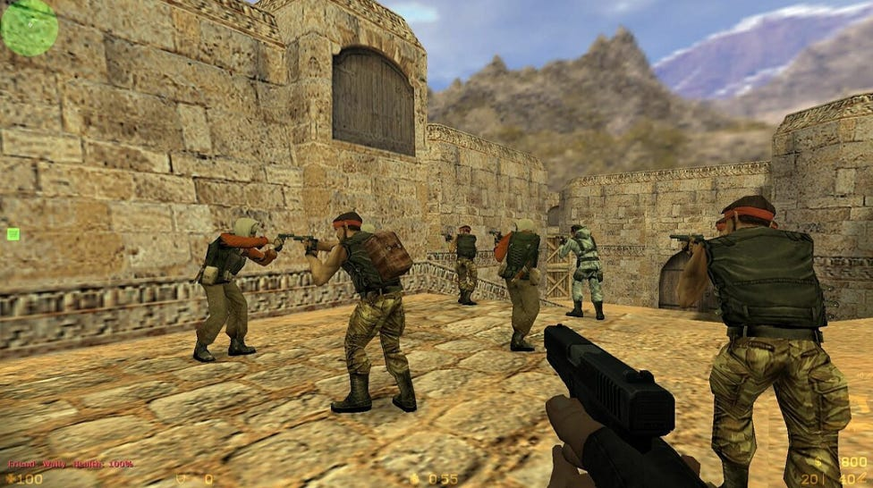
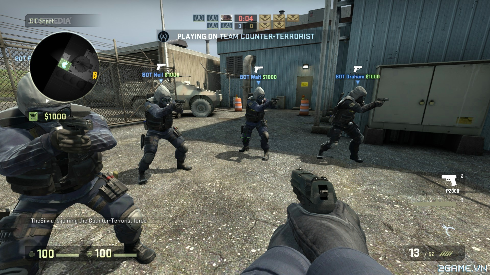
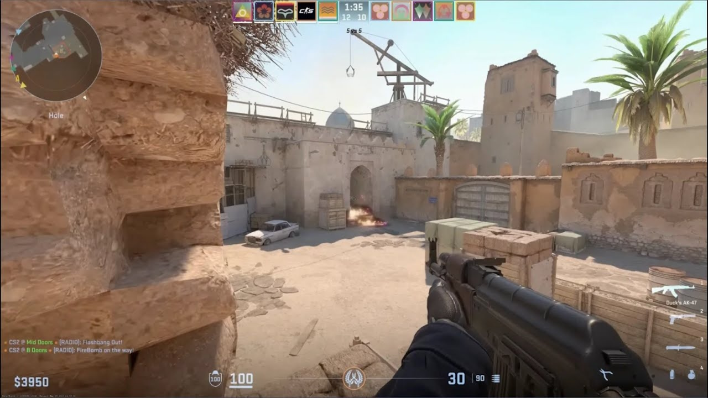

Orígenes y creación

Counter-Strike comenzó en 1999 como un mod (modificación) para el videojuego Half-Life, creado por Minh Le y Jess Cliffe, dos desarrolladores aficionados apasionados por los shooters. La idea original era crear una experiencia multijugador que enfrentara a dos equipos opuestos: terroristas y antiterroristas, con objetivos específicos que fomentaran la estrategia y el trabajo en equipo. La comunidad rápidamente adoptó el mod debido a su jugabilidad innovadora y su enfoque táctico, lo que llevó a Valve, la empresa desarrolladora de Half-Life, a interesarse en adquirir los derechos del juego para transformarlo en un título oficial.
El éxito del mod fue tan grande que Valve lanzó versiones oficiales que mantuvieron el espíritu competitivo y el diseño original, mientras mejoraban la estabilidad y el soporte para servidores dedicados. La colaboración entre los creadores originales y Valve permitió que Counter-Strike evolucionara y se consolidara en el mercado de los videojuegos.
Evolución y crecimiento
Después del éxito inicial, Valve continuó desarrollando la franquicia con varias versiones oficiales. La más icónica fue Counter-Strike 1.6, que se convirtió en un estándar dentro de la comunidad de juegos competitivos gracias a su equilibrio entre accesibilidad y profundidad táctica. Esta versión se mantuvo vigente durante muchos años, con una base de jugadores leales y numerosos torneos profesionales a nivel mundial.
Posteriormente, Valve lanzó Counter-Strike: Source, que usó el motor Source para ofrecer mejoras significativas en gráficos, físicas y efectos de sonido, atrayendo a nuevos jugadores y ofreciendo una experiencia visual renovada. Sin embargo, fue con Counter-Strike: Global Offensive (CS:GO) que la franquicia alcanzó su mayor popularidad y expansión, integrando nuevas armas, mapas, modos de juego, y un sistema de matchmaking que permitió a millones de jugadores competir en línea de forma organizada.
CS:GO también impulsó la escena de los esports, con ligas profesionales, torneos internacionales y un mercado activo de skins que ha generado millones de dólares en ingresos. La comunidad y Valve han mantenido el juego actualizado con parches regulares, eventos y nuevos contenidos.
Counter-Strike hoy
Actualmente, Counter-Strike continúa siendo uno de los shooters más jugados y respetados en el mundo. La franquicia sigue evolucionando con el lanzamiento de Counter-Strike 2 (CS2), que introduce nuevas tecnologías de motor gráfico y mejoras en la jugabilidad para mantener al juego relevante en la era moderna. La comunidad sigue siendo activa y apasionada, con una gran cantidad de jugadores casuales y profesionales que mantienen vivo el espíritu competitivo del juego.
Además, el impacto cultural de Counter-Strike es notable, siendo referencia en el desarrollo de otros videojuegos, inspiración para contenidos multimedia y una base fundamental para la escena de esports a nivel mundial. Valve continúa apoyando la franquicia con actualizaciones y mejoras, asegurando que Counter-Strike siga siendo un referente en la industria durante muchos años más.
